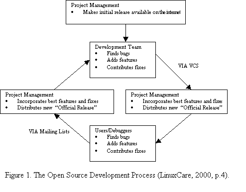
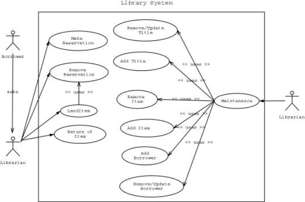
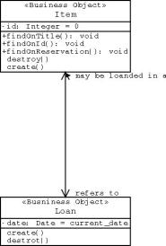
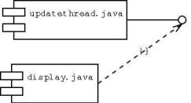
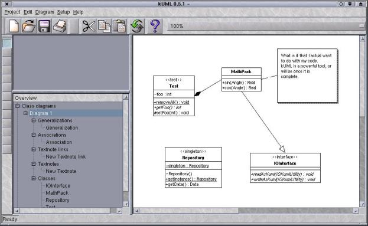
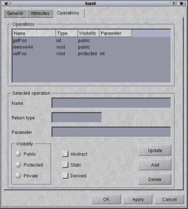
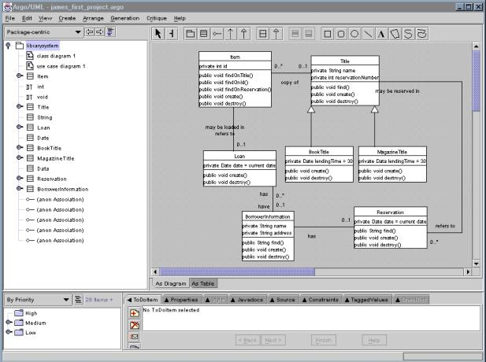

Integrated development with productive Unified Modeling Language (UML) Computer Aided Software Engineering (CASE) tools strengthen Open Source's software models support mechanisms and aid in defining complete solutions for complex design problems. The productivity levels attainable increase significantly through productive UML CASE tool selection that provide software engineers the ability to conduct detailed analysis and design. This paper presents benefits associated with using the Open Source software model and UML CASE tools during the software engineering process. The software model is explained and compared to traditional large-scale software engineering techniques. It also explains the models development phases and how software maintenance intertwines with defining a complete solution for Open Source's customer base. This paper also introduces the software engineer to major CASE tools available for Open Source software development.
The Open Source Software Model
The Open Source software model isn't exactly a new technique or process; it's just an alternate view of software engineering techniques applied to traditional commercial developmental models (Godfrey & Tu, 2000, p. 2). Open Source projects have been around since the 1960's, but tend to experience newfound popularity today due to an increased use of the Internet as a communications and information medium. The software engineering process involves:
TheOpen Source software model supports all aspects of these processes and provide engineers with a methodology to follow in order to produce high quality products implementing client requirements. One definite advantage of the Open Source model is its extension and close relativity "to the scientific development model, with code treated as research results, and published for peer review" (Bezroukov, 2001, p.10). As such, the models strength rests in the fact that it's supported through a wider user-base than traditional software engineering models. Its major fault is the fact that "[t]he Open Source software model works best for software that's already successful. It's practically nonexistent for software that doesn't have a user base" (O'Brien, 2001, p.20).
OpenSource projects tend to have a single manager, a development team, and an interested user-base. Each have their own individual insight into the requirements solution and the process normally provides a wider tester base for system maintenance issues. The cornerstone of the methodology is that it's based upon a decentralized model that is supported from a large community of developers concerned with producing quality, mature products. Practitioners enjoy the opportunity of writing code, which is the primary motivation for almost all Open Source software development, and as such continually improve the software engineering process.
The model does have its share of problems and limitations that though, and they revolve around the decentralization of the software engineering process itself. Large portions of developers are not co-located with co-contributors and maintenance during the software development life cycle is done via the Internet. This fact, when coupled with the democratic nature of Open Source software tends to slow down product development (Bezroukov, p.6). The larger the project the greater the obstacles are to overcome. Co-located Open Source software products don't suffer from this phenomenon, as they have a concentrated effort to ensure movement through the development cycle. The Linux Gnome, KDE, and Eazel projects espouse these coordinated Open Source engineering efforts that have brought the model to the forefront of development today.
OpenSource's software model can be defined as a refinement of strengths associated with existing software engineering models. Like other models it attempts to glean the strengths from currently used software engineering models, while excluding the weakness of those models. This feat has been accomplished through open communications and sharing of ideas between major developers of the Open Source movement. The models structure improves on the incremental, build-and-fix, and rapid prototype models by creating a cyclic communications path between the project maintainer, development team, and users or debuggers, see Figure 1. For example, a Unified Modeling Language (UML) tool concept is developed and registered with the Open Source Development Network SurgeForce (http://www.surgeforce.com), an Internet repository for Open Source projects. After the project attracts a development team the maintainer provides them with an initial release for testing and feature additions. The developers, in turn inform the project manager of enhancements and once they have been coded into the application a user base is identified for product testing. The user base also has the opportunity to suggest design flaw corrections and propose new features they would like the maintainer to incorporate into the project. This improved product is then resubmitted to the development team, and this cycle continues until the project has matured into a stable releasable product.
|  |
Comparative Models
TheOpen Source Software model maintains ties to traditional software engineering models by incorporating various methodologies of each model:
Synchronize andStabilize Model: This models strength is evident by Microsoft Corporation's dominance in the operating system and software industry. The model synchronizes what programmers have developed and periodically stabilizes the product during various portions on the development process rather than at the projects end. The contrast of this model with an Open Source model is that the Microsoft model focuses on consumers rather than a single client, or problem domain. Because of this difference, the Open Source software model generally suffers from incomplete marketing requirements and little system-level or detailed design along with minimal documentation. (Malik & Palencia, 1999). This lack of focus has been the demise of multiple projects, fortunately those that follow established software engineering practices, and tend to satisfy a valid need, succeed more often with their product.
Waterfall Model: This model provides a classic system development specification that can be adapted during any software development process. The model provides a background for all other models and the Open Source model is not excluded. Testing is completed during every phase of the waterfall method and integral to the success of projects utilizing the Open Source software model. It requires checks and balances during the entire process and the Open Source model extends this idea by allowing increased user interaction for functionality improvement.
Build and Fix Model: Schach (p.64) stated, "It is unfortunate that many products are developed using what might be termed as the build-and-fix model." A majority of Open Source projects begin their development life under this model because they are designed to fix some specific problem experienced by a programmer or systems administrator. If the products matures, it eventually evolves from this model into a full-blown product meeting user needs and satisfying design requirements. Planning can overcome Open Source software model limitations, as the project would apply well-established life cycle methodologies to the model itself. The Apache project started from webmasters sharing patches to NCSA web server and developed into the most popular server connected to the Internet today (Behlendorf, 1999).
Rapid PrototypeModel: The rapid prototype model is a typical solution for a defined system design problem. Several Open Source projects base their development effort on this model, as it provides users with a partially workable product and encourages user collaboration for design improvement. Open Source projects that started off as rapid prototypes during initial releases, normally fail to continue progression under this model because as developmental releases increase, either extensive testing and analysis is required or the project suffers from a lack of developer participation.
Spiral Model: Thespiral model provides extensive risk analysis throughout the entire software development life cycle for large-scale software applications. Multiple prototype systems are deployed dependant on each meeting verification and risk analysis criteria until the completed product is ready for operational release. Like other models, the Open Source software model is normally used in conjunction with the spiral model depending on the projects scope and number of users affected. Open Source relational databases have incorporated the verification and risk analysis functionality of the spiral model into their development phases as there is a significant amount of increase in risk associated with database functionality failure for business users.
The maintenance functionality provided by the Open Source software model is its strongest virtue, as the model relies on productivity to both survive and evolve. Users of the product conduct software maintenance and enhancements are normally coded into the application for later submittal to the developers themselves. The code-base normally remains in constant stable state as the users uncover product limitations and again submit fixes to the developers.
OpenSources weakest point is related to product marketing, acceptance, and an uncovering actual business need for mainstream organizations. Most Open Source projects start off with little or no funding as a solution for a problem experienced in conjunction with the programmers "day job". The Perl programming language was such a product that has matured significantly since Larry Wall first wrote the language in 1986 as a way to generate web pages programmatically. "If a company is serious about pursuing this model, it needs to do its research in determining exactly what the product needs to be for an open-source strategy to be successful" (Behlendorf, paragraph 38). This forethought is what strengthens the Open Source software model.
Open Source and UML
Open Source projects, as with proprietary projects, require a level of requirements analysis and modeling to successfully implement a solution. UML is the definitive approach to building model driven development that incorporates sound processes and robust architectures. The specification allows the developer the convenience of using standard notation to model system components, behaviors, and users. The Object Modeling Group specification for UML states:
"TheUnified Modeling Language (UML) is a graphical language for visualizing, specifying, constructing, and documenting the artifacts of a software-intensive system. The UML offers a standard way to write a system's blueprints, including conceptual things such as business processes and system functions as well as concrete things such as programming language statements, database schemas, and reusable software components" (OMG, 2001).
The OMG's major point concerning UML is that it's a"language" for specifying what a system is supposed to accomplish and not a method, nor a procedure for accomplishing specific tasks. The language may be used to support the software development life cycle in a variety of ways, but it was created to serve as a system blueprint. Requirements analysis is conducted concerning a software or system problem, then modeled via UML and presented as a conceptual solution. The UML specification does not specify the exact methodology or processes that must be used in order to solve the problem, but outlines the analysts understanding of the problem for easy translation by a design team.
UML defines notations and semantics for the following types of problem solution (Erriksson & Penker, 1998):
UMLprovides the Open Source software model with the ability to evolve from simple solution applications for personal use to large-scale applications solving industrial size system requirements. Developers are provided model elements, notation, and guidelines conforming to International OMG standards. It's the process that UML provides the development organization that enables them to refocus their development effort toward easy understanding of these complex problems.
Thefact that UML is "nonproprietary and open to all" (OMG, 1997, paragraph 24) allows the standard notation to be incorporated into a variety of tools and languages devoted to Open Source development. UML has successfully enabled open development efforts associated with the Apache Group, http://www.apache.org, and the Common ObjectRequest Broker Architecture (CORBA), http://www.corba.org, provide vendor-neutral specifications for use by developers on multipleoperating systems.
Themajority of Open Source Computer Aided Software Engineering (CASE) tools exclusively support UML, a methodology that has a combined fruition of three leading methodologists: Grady Booch, James Rumbaugh, and Ivar Jacobson. Unlike other object-oriented methodologies, UML was intended to be an open modeling standard that combined the strengths of many other methodologies that have evolved over the over the years. Manytools support UML version 1.2 and allows users to change between visualrepresentations of Booch, OMT (Object-Oriented Modeling Language), and UML inorder to assist developers that are already used to these older methods transition to UML.
Open Source Tools
Theselection of Open Source tools for system design is not an easy task to accomplish because most tools available are in varying stages of development and few of them provide the level of design required to solve complex problems. Designing an Open Source solution for C, C++, and Java only complicate issues, as many of the advanced tools only target one language, or solution. Budget restrictions suffered by most developers of design tools come to light with tool choice functionality because without funding the tool development cycle is usually a long drawn out process.
Thereare currently 28 different UML tools, in various stages of development, hosted on SurgeForce (UML, 2001) that target the Linux operating system, while several WindowsUML tools are provided by Universities or Integrated Development Environment (IDE) companies to promote their IDEs. The Open Source community maintains several tools for integrating UML support into projects ranging from single-developer applications to larger coordinated efforts. The problem is not finding a tool for a specific language or library, but finding an application that can actually provide complete round-trip Software Engineering support.
TheOpen Source software model enjoys developer support for UML modeling tools because "UML defines a semantic metamodel, not a tool interface, storage, or run-time model, although these should be fairly close to one another" (OMG, 1997, paragraph 13). The reality of Open Source tools is that most often fall short of just having an idea of what the tool should accomplish and remain in a state of incomplete development or are poorly maintained. Some tools are designed for platform independence so deployment ease has restricted the tools programming language to Java. The remaining tools target a specific operating system and a few provide extensive design support to the Software Development Life Cycle.
Dia and UML
Dia isa platform independent application for UML modeling based on the UML 1.2 specification. The application was originally developed as a Linux alternative to Microsoft Visio and provides extensive support to the entire system design process. The tool isn't a formal UML application though and can only be used to depict system Activity, Use Case, Collaborative, and Component diagrams.
Accordingto Eriksson and Penker (1998, p.35-36), Dia is a modern CASE tool because it provides functions for drawing diagrams, acts as a repository, supports model navigation, and covers the model at all abstraction levels. It doesn't meet the specifications of an advanced tool though, as it provides no functionality for code generation, reverse engineering, secondary CASE tool integration, and contains no interchangeable CASE tool models. The tool is invaluable to Open Source system modeling through its ease of use and navigation simplicity.
Diawas used to model a University Library System Use Case scenario, see Figure 2, and a partial Class diagram of the same system, see Figure 3. Any formal version of the UML specification can be modeled via Dia as long as the user remains within the constraints of that particular specification. Dia's functionality also includes the support of any formal component specification, see figure 4.
| 
Figure 2. Dia Library System Use-Case Diagram. |
| 
Figure 3. Dia Class Diagram |

Figure 4. Dia Component Diagram |
kUML
kUML is an Open Source UML solution specifically designed for the Linux SuSe 6.2 operating system. kUML was developed to supports the UML 1.3 specification and is limited to the depiction of Use-Case and Class diagramming only. Like many Open Source products, configuration is the biggest hurdle to overcome as installation relies on the ability of the user for it to work correctly. Since the tool was developed on SuSe 6.2, it was optimized to run on that Linux variant, but. kUML can be installed on any Linux operating system variant with the appropriate KDE and QT libraries installed or that uses RedHat's package management (RPM) scheme as long as two extra SuSe specific RPMs are also installed (libcms.so.1 and libmng.so.0). The weakness of this tools lies with its immaturity, lack of developers, and functionality. Although the developers tout it as having successfully importing over 1200 classes relating to the kOffice project, the application consistently "core dumps" upon functionality stress testing.
kUML's strengths lie in its support of the UML specification. The tool took portions of the specification and focused on development of that portion. Class diagrams are effortlessly created, see Figures 5, and manipulated, see Figure 6, to mirror the system to be designed. Functions, attributes, and abstraction can be diagrammed to meet the design specification. The tool isn't very usable yet, but if kUML matures it will provide Open Source developers with a tool promoting effective software engineering techniques.
| 
Figure 5. kUML Classdiagramming functionality. |
| 
Figure 6. kUML Class attribute editing functionality. |
ArgoUML
TheOpen Source software model receives extended satisfaction of UML specification 1.3 with Tigris' ArgoUML CASE tool. The tool is a platform independent Java application written entirely in Java 1.2 and the Java Foundation Class while remaining compliant with OMG Standard for UML (Tigris, 2001). ArgoUML provides for complete system and component modeling of any project through a manipulative user interface. Class diagramming, see Figure 7, is intuitive and dependencies easily mapped to associated classes. The Open Source community has been given total UML support by Tigris and can easily migrate from programming-in-the-small to programming-in-the-large.
| 
Figure 7. ArgoUML Classdiagramming. |
Industrialsize diagramming is easily accomplished through the tools cognitive support features. It maintains a dynamic "To Do" list during the design process and suggests possible improvements based on completed diagramming. ArgoUML has one of the strongest Open Source modeling environments available due to its ability to offer multiple, overlapping diagrams that provide the designer with a full overview of their project. Throughout the design process skeleton Java code is maintained for generation whenever the design process is complete. Open Source modeling environments normally have several development cycles to progress through before they offer the software engineer a productive modeling environment, while ArgoUML provides the necessary interface for complete CASE tool support of a development project.
xFig
xFigis one of the weakest Open Source UML tools available. It provides almost no interface for the system designer to integrate their project into and is hard to manipulate. The tool contains a limited number of UML notations supporting Use-Case, Activity, and Class diagramming. xFig is an old X11 vector-drawing package that inherited UML notation diagrams due to no other Open Source packing having this functionality. Basic system design can be accomplished with xFig, but various other applications exist that provide significant improvements over what xFig can offer a software engineer. Fault for xFig's lack in functionality, isn't that of the tool or it's designers though, as with many Open Source development projects there was a need at one time for UML diagramming by a user who wrote UML notation support into the product. But its functionality for UML support is over as tools like Dia and ArgoUML have matured to support a wider range of system design requirements.
OpenTool 3.1
OpenTool 3.1 is a powerful platform independent UML modeling tool based on UML version 1.3 that also provides a complete system development solution package. The strengths of the tool lie in its ability to generate source code, in C++, Smalltalk, or Java, documentation generation, and reverse engineering for Java applications. UML diagramming support includes Package, Class, Sequence, State, Use-Case, and Collaboration diagrams. The tools ability to support the Open Source Model lies in its low-cost and complete package integration. The tool itself goes against the Open Source criteria, as it's a proprietary product but it allows development on Linux, Solaris, and Windows machines. This fact extends the tools appeal considerably.
Conclusion
Themain stumbling block for the Open Source community is convincing more developers to start looking at the bigger picture. Through tool promotion UML can be easily integrated into projects to lower development time and shorten the projects deployment timeline.
Recentproposals by Martin Fowler that the nature of design is dieing, (Fowler, 2001, p.43-46) are not unfounded as programming techniques evolve toward Extreme Programming (XP), a process that extends the software development back to an evolutionary design rather than a planned design process. XP's ability to consistently keep code as clear and simple as possible while maintaining knowledge of design patterns and then using this knowledge only where it is required.
Asignificant problem with Open Source UML support is the choice to support the UML 1.2 specification while many propriety vendors support UML 1.4 or are preparing their tools for the UML 2.0 specification. "UML 1.3 was the first mature release of the modeling language specification" (Kobryn, 1999, p.36) and although specification leading up to UML 1.2 were immature, developers should use a tools supporting the most mature specification possible. By failing to conform to the newest UML design standards Open Source projects will never support improved architectural alignment with other OMG modeling standards, remain harder to understand and not support mainstream component architectures like Entity Java Beans or COM+.
The Open Source software model is a viable alternative for the software engineering community. It has existed for over 30 years and is easily adapted to continually changing requirements with the integration of UML CASE tool support while making allowances for impending technological changes.
References
Behlendorf,
B. (1999, January) Open Sources: Voices from the Open Source Revolution.
Retrieved February 10, 2001 from the World Wide Web:
Bezrouov, N. (2001). Open
Source Software: Development as a Special Type of Academic Research (Critique
of Vulgar Raymondism). Retrieved February 11, 2001 from the World Wide Web:
Erriksson, H., & Penker, M. (1998). UML Toolkit. New York. John Wiley & Sons.
Fowler, M. (2001, April). Is Design Dead?. Software Development Vol. 9, No. 4, 43-46.
Godfrey, M.W. & Tu, Q. (2000). Evolution in Open Source Software: A Case Study. Proceedings of the International Conference on Software Maintenance (ICSM-00), IEEE, 3. 1063-6773.
Kobryn, C. (1999, October). UML 2001: A Standardization Odyssey. Communications of the ACM, Vol.42, No.10, 29-37.
LinuxCare. (2000, February). Demystifying Open Source: How Open Source Software Development Works. Retrieved February 15, 2001 from the World Wide Web: www.linuxcare.com
Malik, S. & Palencia, J.R. (1999, December 6). Synchronize and Stabilize vs. Open-Source. (Computer Science 95.314A Research Report). Ottawa, Ontario, Canada: Carleton University, Computer Science.
O'Brien, M. (2001, January). Linux, the Big $, and Mr. Protocol. Server/Workstation Expert. 20.
Object Modeling Group. (2001). Retrieved February 15, 2001 from the World Wide Web: www.omg.org
Object Modeling Group. (1997). Press Release. Retrieved February 15, 2001 from the World Wide Web: www.omg.org/news/pr97/umlprimer.html
Schach, S.R. (1998). Classical and Object-Oriented Software Engineering: With UML and C++. 4th ed. WCB/McGraw-Hill.
Tigris.org. (2001). ArgoUML Features. Retrieved February 19, 2001 from the World Wide Web: http://argouml.tigris.org/features.html
UML. (2001). UML Notes. Retrieved March 11, 2001 from the World Wide Web: www.lut.ti/~hevi/uml/projects
 James Gilliam
James Gilliam